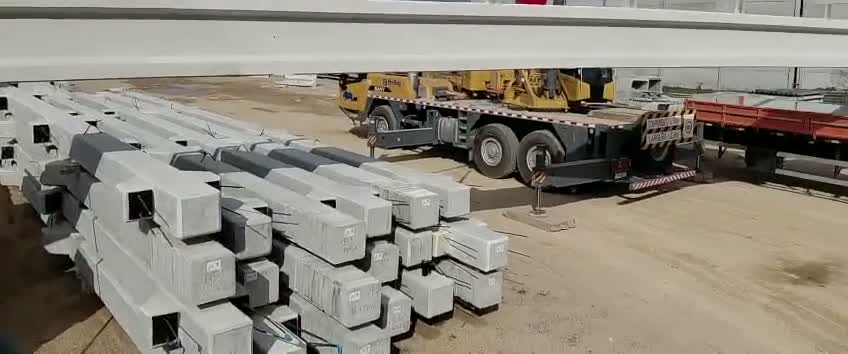
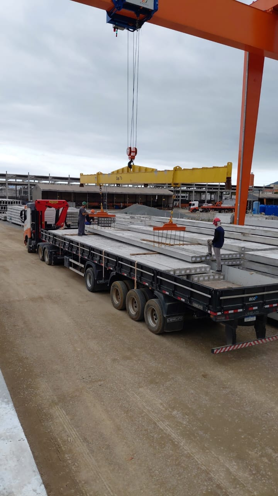
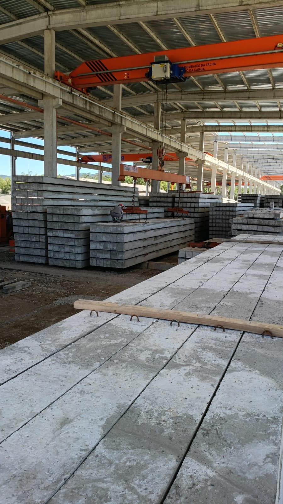

LOGÍSTICA DE CARGA, DESCARGA E MOVIMENTAÇÃO
A FORÇA QUE
MOVE
ESTRUTURAS
A gente não fabrica a peça.
A gente faz a peça chegar.
Carga, descarga e organização de pátio para quem trabalha com carga pesada — com especialidade em pré-moldados de concreto.
ENTRE A PRODUÇÃO E A SAÍDA
O gargalo não está
na produção.
Está no pátio.
A peça fica pronta e para.
O caminhão chega e espera.
O pátio enche e trava.
No fim do mês a conta não fecha, e ninguém aponta o motivo — porque o motivo está no chão, entre a produção e a saída.
Veja uma operação organizada
O QUE FAZ A DIFERENÇA
Carga pesada não se move na força bruta.
Se move no método.
Ponto certo de içamento.
Peça de concreto tem onde pegar. Errar o ponto é trincar a peça.
Sequência de carregamento.
A ordem em que sobe no caminhão decide se desce inteira.
Pátio que carrega.
Organizar não é arrumar: é desenhar o pátio para o caminhão entrar, carregar e sair.

NO CHÃO, EM MOVIMENTO
É assim que
a operação anda.
O QUE A GENTE FAZ
Da peça pronta
à carga no lugar.
Carga pesada é o nosso trabalho.
Pré-moldado de concreto,
a nossa especialidade.
Carga e descarga
Movimentação de peças de concreto, estruturas e cargas pesadas, com equipe treinada e equipamento adequado. Peça que sobe inteira e desce inteira.
Conversar sobre o serviço AWL / SERVIÇOSOrganização e logística de pátio
Redesenho do fluxo entre produção, estoque e saída. O pátio deixa de ser depósito e vira parte da entrega.
Conversar sobre o serviço AWL / SERVIÇOSCoordenação de operação em obra
Liderança no canteiro para receber, posicionar e liberar carga sem travar o cronograma. Turno diurno e noturno.
Conversar sobre o serviço NovoControle de estoque
Saber o que foi produzido, o que está no pátio e o que já saiu. Fechamento não é controle — controle é saber agora.
Conversar sobre o serviço
QUEM FAZ A OPERAÇÃO ANDAR
Dono no chão.
Equipe formada
em casa.
A AWL não terceiriza a operação dela.
Quem coordena está no pátio, junto com a equipe, no turno em que a obra precisar — inclusive de madrugada. É isso que separa mandar gente de entregar operação.
Conheça a AWL
A AWL nasceu da junção de dois sócios e de uma constatação simples: fábrica boa perde dinheiro por causa de movimentação ruim. O trabalho é esse — entrar onde a carga trava e fazer ela andar.
Hoje a empresa atende fábricas de pré-moldados, construtoras e empreiteiras na Grande Florianópolis, com equipe própria formada dentro de casa.

REGISTROS DA OPERAÇÃO
O trabalho aparece.
VAMOS FAZER ANDAR